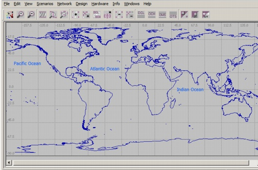
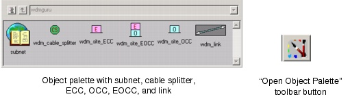
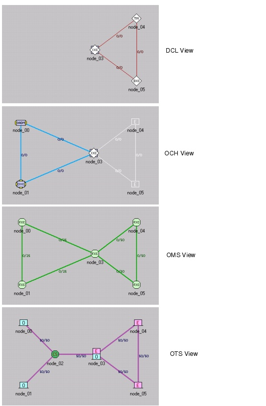
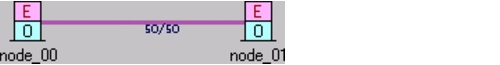
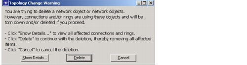
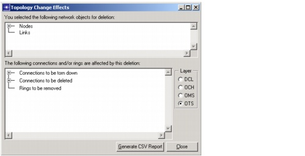
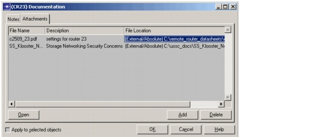
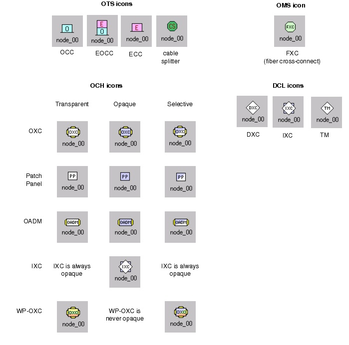

Creating a Baseline Scenario > Defining a Network Topology
Defining a Network Topology
After you create a new project and specify the required information in the Startup Wizard, the Project Editor opens an empty topology, as shown in Figure 3-9. One important step in the design process is to define the network topology—that is, to create node objects and connect the nodes with link objects.
Figure 3-9 An Empty Topology

There are two methods for creating a topology in SP Guru Transport Planner. You can define a topology manually, as described in this section. You can also import some or all of a topology, as described in Importing and Exporting Data .
The Object Palette
You define nodes and links in your network using the object palette (shown in the following diagram). To open this window, click the Open Object Palette toolbar button.
Figure 3-10 The Object Palette

You can create the following types of objects using the object palette:
- ECC (Electrical Cross-Connect) nodes switch SDH/SONET traffic only and do not have an optical counterpart. These nodes are not visible in the OCH layer.
- OCC (Optical Cross-Connect) nodes can switch wavelengths only and do not have an electrical counterpart. These nodes are not visible in the DCL layer.
- EOCC (Electrical-Optical Cross-Connect) nodes switch both SDH/SONET traffic and wavelengths. These nodes are visible in both the DCL and OCH layers.
- A cable splitter node is a bifurcation point for optical fiber pairs; it switches fiber pairs at the OTS layer, as described in Configuring Cable Splitters and Fiber Routes.
- A subnet object is used to include annotations in a scenario. It is good practice to include annotations in a scenario, so that others can understand the details and objectives of the scenario.
The network topology can appear different according the network layer in which it is being viewed, as shown in Figure 3-11-DCL, OCH, OMS, and OTS Views of a Multi-Tiered Topology . For more information about ECCs, OCCs, and EOCCs, see Concepts and Models .
Figure 3-11 DCL, OCH, OMS, and OTS Views of a Multi-Tiered Topology

Creating Nodes
When you drag a node model icon into the workspace, or select a link icon and connect two nodes, you create an instance (copy) of that model.
Procedure 3-1 Creating a Node Using the Object Palette
- Open the object palette.
- Click on the node model icon in the object palette, then move the cursor into the Project Editor workspace.
A square icon outline appears around the cursor to indicate that you are now in "node creation mode."
- Click the location in the workspace where you want to place the new node.
SP Guru Transport Planner creates the node in the workspace and gives it a default name. The node's appearance varies depending on the current network-layer view and the node type (as described in Node Model Icons).
The default name is a text string followed by a number that is incremented each time another object is created. To rename a node, right-click on it and choose Set Name.
- To create another node of the same type, click at a new location. Repeat this step for each node of the same type that you want to create.
- When you are finished creating nodes, right-click to end the operation.
- If you want to configure individual nodes, open the Node Browser (see Node Browser for more information).
End of Procedure 3-1
Creating Links
Links are the communication channels between nodes. You should always add links in the OTS layer. Depending on the type of end nodes, a link looks different at different network layers. There are two types of links, optical links and electrical links.
- Links between OCC-OCC, OCC-EOCC, and EOCC-EOCC node pairs are optical links (that is, OCH links not visible in the DCL layer) on which WDM line systems are deployed.
- Links between EOCC-ECC and ECC-ECC node pairs are electrical links (DCL links drawn in white in the OCH layer) on which SONET/SDH line systems are deployed. These are physical DCL links. SP Guru Transport Planner can also create logical DCL links between EOCC-EOCC node pairs as a result of routing non-native OCH connections between two nodes.
Note—You cannot create links between OCC-ECC node pairs.
Note—Links that connect a cable splitter do not appear at other layers before the cable splitter is configured to specify the number of fibers routed between its end nodes.
You can create as many links as you want between the same end nodes. You can right-click on a link in the OTS layer to add a parallel link. This results in separate cables between the nodes (for example, to provide protection paths). These cables use separate ducts. You can also create a parallel link manually from the object palette.
When you add a link in lat/long mode, SP Guru Transport Planner calculates its length (in km) using the coordinates of the nodes. If you move the nodes after adding a link, or change the path of the link, the link length does not adjust automatically; you must change the length manually using the OTS Link Browser. You can also redefine the path of a link. To do so right-click on the link, and select "Redefine Path". Then draw the path of the link in the project editor by clicking where you want to define the bend points of the link. For more information, see Link Browser.
Procedure 3-2 Creating a Link
- If the object palette is not already open, click the Open Object Palette toolbar button.
- Click on the link model icon in the object palette, then move the cursor into the Project Editor workspace.
A diagonal line appears to the upper-right of the cursor to indicate that you are in link-creation mode.
- To create a link between two nodes:
- Click on the first node.
- Click on the second node.
SP Guru Transport Planner draws the link between the two objects.

- If you want to redefine the link, right-click on the link, and select "Redefine Path". Then draw the path of the link in the project editor by clicking where you want to define the bend points of the link.
End of Procedure 3-2
Deleting, Cutting, Copying and Pasting Nodes and Links
The Edit menu includes commands for copying and pasting selected objects.
Note—You can perform these actions in the OTS layer only.
Cutting and Deleting
The Edit menu includes commands for cutting and deleting network objects. If you cut or delete objects that currently support traffic, SP Guru Transport Planner does the following:
When you perform a cut/delete operation, SP Guru Transport Planner shows how the proposed change will affect traffic so you can identify and reroute the affected traffic after the topology change.
Procedure 3-3 Cutting/Deleting Network Objects
- Click the OTS toolbar button to show the OTS layer (you must be in this layer to delete network objects).
- Select the objects you want to delete by clicking on them (hold down the Shift or Control key on your keyboard to select multiple objects).
- Cut or delete the selected objects.
- To cut, choose Edit > Cut or press Ctrl+X.
- To delete, choose Edit > Delete or press the Delete key on your keyboard.
The Topology Change Warning window appears (Figure 3-12). This window states that connections and/or rings are affected by the objects you are trying to delete.
Figure 3-12 Topology Change Warning Window

- Click "Show Details ..." to view details of the affected connections and rings.
The Topology Change Effects window appears (Figure 3-13). The top treeview lists the objects you selected to cut/delete. The bottom pane includes two treeviews that show the connections to be torn down and deleted. Another treeview shows the rings to be removed as a result of the topology change. The bottom treeviews are as similar to those used in the Connection Browser (Table 4-11-Connection Browser: Controls ) and the Ring Browser (Table 4-15-Ring Browser: Treeview ).
Figure 3-13 Topology Change Effects Window

- Examine the "Connections to be torn down," "Connections to be deleted," and "Rings to be removed" treeviews to see the effects of the topology change. Use the Layer buttons to see how the topology is affected at each layer. To view a csv report of this data, click Generate CSV Report.
- Click Close to return to the Topology Change Warning window.
- Click Delete (to delete the selected objects) or Cancel (to cancel the operation).
When you click Delete, SP Guru Transport Planner deletes the selected nodes and links, tears down and deletes affected connections, and removes rings.
- Close the Topology Change Warning window.
- Reroute the connections that were torn down using the existing SP Guru Transport Planner design functionality such as routing, dimensioning, grooming, and so. You might want to split the unrouted connections into a residual traffic matrix.
End of Procedure 3-3
Creating Custom Network Documentation
In some cases, you might want to create custom documentation for individual network objects. Each node, link, and subnet object has a Documentation attribute that can specify plain-text descriptions and external files that include additional documentation. Examples of useful documentation might include:
To view and edit custom documentation for an object, right-click on the object and choose Edit Documentation. In the resulting dialog box (Figure 3-14), you can enter a plain-text description and/or attach external files such as images, data files, and Word documents.
Figure 3-14 Edit Documentation Dialog Box, "Attachments" Tabbed Page

Node Model Icons
A node icon varies according to the network layer view and the node type, as shown in Figure 3-15. In the OCH layer, the icon color varies depending on whether the node is opaque, transparent, or selective.
Figure 3-15 Node Icons in OTS, OMS, OCH, and DCL Layers

| Home © 1987-2007 OPNET Technologies, Inc. All Rights Reserved. This software may be covered by one or more U.S. Patents. See complete patent notice in the Legal Notices section. OPNET Support Center |